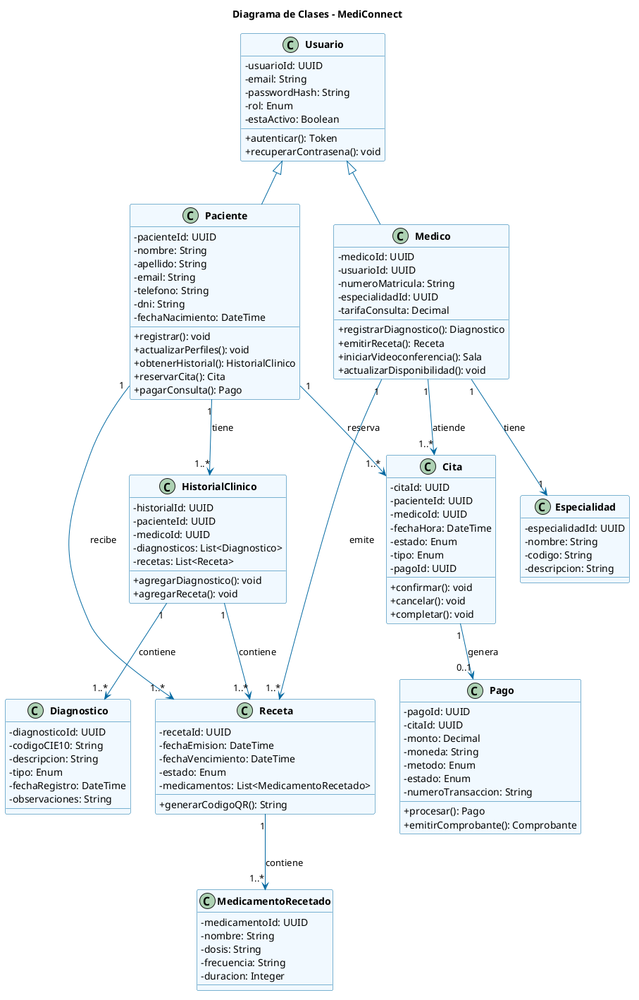

VISTA LÓGICA
Diagrama de Clases — Modelo de Dominio
Interpretación técnica
El núcleo del sistema se modela con clases de dominio puras: Paciente, Médico, Cita, HistorialClínico, Receta, Pago. Cada entidad define atributos tipados y métodos de negocio, manteniendo independencia de infraestructura (Arquitectura Hexagonal).
- Paciente tiene muchas Cita (1:N).
- Médico emite Receta y actualiza HistorialClínico.
- Cita genera Pago tras confirmación.
- Herencia: Usuario → Paciente, Médico.
